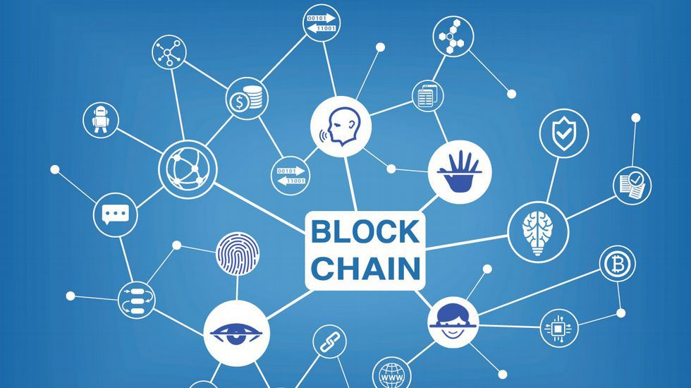

HTML 5
HTML5 (HyperText Markup Language, versión 5) es la quinta revisión importante del lenguaje básico de la World Wide Web, HTML. HTML5 especifica dos variantes de sintaxis para HTML: una «clásica», HTML (text/html), conocida como HTML5, y una variante XHTML conocida como sintaxis XHTML5 que deberá servirse con sintaxis XML (application/xhtml+xml).Esta es la primera vez que HTML y XHTML se han desarrollado en paralelo.
Al no ser reconocido en viejas versiones de navegadores por sus nuevas etiquetas, se recomienda al usuario común actualizar su navegador a la versión más nueva, para poder disfrutar de todo el potencial que provee HTML5.
El desarrollo de este lenguaje de marcado es regulado por el Consorcio W3C. HTML5 establece una serie de nuevos elementos y atributos que reflejan el uso típico de los sitios web modernos.
Incorpora etiquetas (canvas 2D y 3D, audio, vídeo) con codecs para mostrar los contenidos multimedia. Actualmente hay una lucha entre imponer codecs libres (WebM + VP8) o privados (H.264/MPEG-4 AVC).
Articulos Relacionados:
Concepto de HTML5Para qué sirve HTML5?
Etiquetas en HTML5
Cómo crear tu sitio web usando HTML5
Mas Información A Través de Videos
Introducción a HTML5HTML5 y CSS3
Diferencias entre otras versiones de HTML
Editor de código recomendado para HTML5

CSS3
El nombre hojas de estilo en cascada viene del inglés Cascading Style Sheets, del que toma sus siglas. CSS es un lenguaje usado para definir la presentación de un documento estructurado escrito en HTML o XML (y por extensión en XHTML).
El W3C(World Wide Web Consortium) es el encargado de formular la especificación de las hojas de estilo que servirán de estándar para los agentes de usuario o navegadores.
La información de estilo puede ser adjuntada como un documento separado o en el mismo documento HTML. En este último caso podrían definirse estilos generales en la cabecera del documento o en cada etiqueta particular mediante el atributo "style"
El CSS sirve para definir la estética de un sitio web en un documento externo y eso mismo permite que modificando ese documento (la hoja CSS) podamos cambiar la estética entera de un sitio web, el mismo sitio web puede variar totalmente de estética cambiando solo la CSS, sin tocar para nada los documentos HTML o jsp o asp que lo componen.
Articulos Relacionados:
Concepto de CSS3Características de CSS3
Ventajas y desventajas
Gestores de CSS3
Mas Información A Través de Videos
Introducción a CSS3Animaciones en CSS3
Colores en CSS3
Novedades en CSS3

JAVASCRIPT
JavaScript (abreviado comúnmente JS) es un lenguaje de programación interpretado, dialecto del estándar ECMAScript. Se define como orientado a objetos, basado en prototipos, imperativo, débilmente tipado y dinámico.
Se utiliza principalmente en su forma del lado del cliente (client-side), implementado como parte de un navegador web permitiendo mejoras en la interfaz de usuario y páginas web dinámicas aunque existe una forma de JavaScript del lado del servidor (Server-side JavaScript o SSJS).
Su uso en aplicaciones externas a la web, por ejemplo en documentos PDF, aplicaciones de escritorio (mayoritariamente widgets) es también significativo
Eesde el 2012, todos los navegadores modernos soportan completamente ECMAScript 5.1, una versión de javascript. Los navegadores más antiguos soportan por lo menos ECMAScript 3. La sexta edición se liberó en julio del 2015.
Articulos Relacionados:
Concepto de JAVASCRIPTCaracterísticas de JAVASCRIPT
Ventajas y desventajas
Seguridad en JAVASCRIPT
Mas Información A Través de Videos
Introducción a JAVASCRIPTUsos de JAVASCRIPT
Gestores de Eventos en JAVASCRiPT
Métodos y arreglos en JAVASCRIPT

PROGRESSIVE WEB APPS
Las Progressive Web Apps son experiencias que combinan lo mejor de la Web y lo mejor de las apps. Están disponibles para los usuarios a partir de la primera visita en una pestaña del navegador y no requieren instalación.
A medida que el usuario compila progresivamente una relación con la app con el paso del tiempo, se hace más y más poderosa.
Se carga rápidamente, incluso con redes débiles, envía notificaciones push relevantes, tiene un ícono en la pantalla principal y se carga como experiencia de pantalla completa y de primer nivel.
Una Progressive Web App es progresiva porque funciona para todos los usuarios, sin importar la elección de navegador, porque está construida con mejora progresiva como principio central.
Articulos Relacionados:
Concepto de Progressive Web Apps¿Cómo funciona?
Características de las PWA
ventajas de las PWA
Mas Información A Través de Videos
Introducción a las PWASCómo usar una PWA
Ejemplos de PWAS
PWA en conjunto con Angular

INTELIGENCIA ARTIFICIAL
La inteligencia artificial (IA), es la inteligencia exhibida por máquinas. En ciencias de la computación, una máquina «inteligente» ideal es un agente racional flexible que percibe su entorno y lleva a cabo acciones que maximicen sus posibilidades de éxito en algún objetivo o tarea.
Machine Learning
El aprendizaje automático o aprendizaje automatizado o aprendizaje de máquinas (del inglés, "Machine Learning") es el subcampo de las ciencias de la computación y una rama de la inteligencia artificial, cuyo objetivo es desarrollar técnicas que permitan que las computadoras aprendan. De forma más concreta, se trata de crear programas capaces de generalizar comportamientos a partir de una información suministrada en forma de ejemplos.
Deep Learning
Aprendizaje profundo (en inglés, deep learning) es un conjunto de algoritmos de clase aprendizaje automático (en inglés, machine learning) que intenta modelar abstracciones de alto nivel en datos usando arquitecturas compuestas de transformaciones no lineales múltiples.
Red Neuronal
Las redes neuronales (también conocidas como sistemas conexionistas) son un modelo computacional basado en un gran conjunto de unidades neuronales simples (neuronas artificiales) de forma aproximadamente análoga al comportamiento observado en los axones de las neuronas en los cerebros biológicos.
Articulos Relacionados:
Inteligencia ArtificialMachine Learning
Deep Learning
Red Neuronal
Mas Información A Través de Videos
Introducción a la I.A.Introducción al Machine Learning
Introducción al Deep Learning
Introducción a las Redes Neuronales
CRIPTOMONEDAS
Una criptomoneda, criptodivisa (del inglés cryptocurrency) o criptoactivo es un medio digital de intercambio que utiliza criptografía fuerte para asegurar las transacciones financieras, controlar la creación de unidades adicionales y verificar la transferencia de activos.
Las criptomonedas son un tipo de divisa alternativa y de moneda digital. Las criptomonedas tienen un control descentralizado, en contraposición a las monedas centralizadas y a los bancos centrales.
El control descentralizado de cada moneda funciona a través de una base de datos descentralizada, usualmente una cadena de bloques (en inglés blockchain), que sirve como una base de datos de transacciones financieras pública.
La primera criptomoneda que empezó a operar fue el bitcoin en 2009 y, desde entonces, han aparecido muchas otras con diferentes características y protocolos como Litecoin, Ethereum, Ripple, Dogecoin.
Articulos Relacionados:
Introducción a la CriptomonedaCriptomoneda más usada
Desventajas de la Criptomoneda
El mercado y la criptomoneda
Mas Información A Través de Videos
Introducción a la Criptomoneda.Como funcionan las criptomonedas
Como invertir en la criptomoneda
Curiosidades de la criptomoneda

BLOCKCHAIN
BlockChain es una estructura de datos en la que la información contenida se agrupa en conjuntos (bloques) a los que se les añade metainformaciones relativas a otro bloque de la cadena anterior en una línea temporal, de manera que gracias a técnicas criptográficas, la información contenida en un bloque solo puede ser repudiada o editada modificando todos los bloques posteriores.
Esta propiedad permite su aplicación en entorno distribuido de manera que la estructura de datos blockchain puede ejercer de base de datos pública no relacional que contenga un histórico irrefutable de información.
En la práctica ha permitido, gracias a la criptografía asimétrica y las funciones de resumen o hash, la implementación de un registro contable (ledger) distribuido que permite soportar y garantizar la seguridad de dinero digital.
Siguiendo un protocolo apropiado para todas las operaciones efectuadas sobre la blockchain, es posible alcanzar un consenso sobre la integridad de sus datos por parte de todos los participantes de la red sin necesidad de recurrir a una entidad de confianza que centralice la información.
Articulos Relacionados:
Introducción al BlockChain Clasificación del BlockChain
Aplicaciones del BlockChain
Relación entre BlockChain y Bitcoin
Mas Información A Través de Videos
Introducción al BlockChain.Funcionamiento del BlockChain
Aplicaciones del BlockChain
Curiosidades del BlockChain
CYBERSECURITY
La seguridad informática, también conocida como ciberseguridad o seguridad de tecnología de la información, es el área relacionada con la informática y la telemática que se enfoca en la protección de la infraestructura computacional y todo lo relacionado con esta y, especialmente, la información contenida en una computadora o circulante a través de las redes de computadoras.
Para ello existen una serie de estándares, protocolos, métodos, reglas, herramientas y leyes concebidas para minimizar los posibles riesgos a la infraestructura o a la información.
La ciberseguridad comprende software (bases de datos, metadatos, archivos), hardware, redes de computadoras y todo lo que la organización valore y signifique un riesgo si esta información confidencial llega a manos de otras personas, convirtiéndose, por ejemplo, en información privilegiada.
La definición de seguridad de la información no debe ser confundida con la de «seguridad informática», ya que esta última solo se encarga de la seguridad en el medio informático, pero la información puede encontrarse en diferentes medios o formas, y no solo en medios informáticos.
Articulos Relacionados:
Introducción al Cybersecurity Objetivos
Amenazas
Técnicas para asegurar el sistema
Mas Información A Través de Videos
Introducción al Cybersecurity.Amenazas del Cybersecurity
Beneficios para las empresas
Seguridad lógica

REALIDAD VIRTUAL
La realidad virtual (RV) es un entorno de escenas u objetos de apariencia real. La acepción más común refiere a un entorno generado mediante tecnología informática, que crea en el usuario la sensación de estar inmerso en él.
Dicho entorno es contemplado por el usuario a través de un dispositivo conocido como gafas o casco de realidad virtual.
La ciberseguridad comprende software (bases de datos, metadatos, archivos), hardware, redes de computadoras y todo lo que la organización valore y signifique un riesgo si esta información confidencial llega a manos de otras personas, convirtiéndose, por ejemplo, en información privilegiada.
Este puede ir acompañado de otros dispositivos, como guantes o trajes especiales, que permiten una mayor interacción con el entorno así como la percepción de diferentes estímulos que intensifican la sensación de realidad.
Articulos Relacionados:
Introducción a la Realidad Virtual Historia
Tipos de Realidad Virtual
Productos
Mas Información A Través de Videos
Introducción a la Realidad Virtual.Usos
Mejor producto de Realidad Virtual
Realidad Virtual en la mayor red social

REALIDAD AUMENTADA
La realidad aumentada (RA) es el término que se usa para describir al conjunto de tecnologías que permiten que un usuario visualice parte de mundo real a través de un dispositivo tecnológico con información gráfica añadida por éste dispositivo.
Este dispositivo o conjunto de dispositivos, añaden información virtual a la información física ya existente; es decir, una parte sintética virtual a la real.
De esta manera los elementos físicos tangibles se combinan con elementos virtuales creando así una realidad aumentada en tiempo real.
En torno a 1992, Tom Caudell acuñó el término realidad aumentada, sucediéndose posteriormente medios y definiciones relativos a ella.
Articulos Relacionados:
Introducción a la Realidad Aumentada Historia cronológica
Realidad aumentada y la tecnología
Ventajas y desventajas
Mas Información A Través de Videos
Introducción a la Realidad AumentadaUsos
Apps de Realidad Aumentada para Smartphones
Experiencias de la realidad aumentada

REALIDAD MIXTA
La realidad mixta (RM), también llamada a veces realidad híbrida, es la combinación de realidad virtual y realidad aumentada. Esta combinación permite crear nuevos espacios en los que interactúan tanto objetos y/o personas reales como virtuales.
Es decir, se puede considerar como una mezcla entre la realidad, realidad aumentada, virtualidad aumentada y realidad virtual.
El término realidad mixta no debe confundirse con el de realidad aumentada o RA. La realidad aumentada genera los estímulos a tiempo real para la interacción del usuario, los cuales se superponen sobre el entorno físico de este, mientras que la realidad mixta no sólo permite la interacción del usuario con el entorno virtual sino que también permite que objetos físicos del entorno inmediato del usuario sirvan como elementos de interacción con el entorno virtual.
En 1994 Paul Milgram y Fumio Kishino definieron el concepto de realidad mixta como cualquier espacio entre los extremos del continuo de la virtualidad. Este continuo de la virtualidad se extiende desde el mundo completamente real hasta el entorno completamente virtual, encontrándose entre medio de estos la realidad aumentada y realidad virtual.
Articulos Relacionados:
Introducción a la Realidad Mixta ¿Cómo funciona?
Usos
Ejemplos de su aplicación
Mas Información A Través de Videos
Introducción a la Realidad MixtaDiferencias entre los otros tipos de realidad
Aplicación en la medicina
Realidad Mixta en Windows 10

INTERNET DE LAS COSAS
El internet de las cosas (en inglés, Internet of Things, abreviado IoT; IdC, por sus siglas en español 2) es un concepto que se refiere a una interconexión digital de objetos cotidianos con internet.
Es, en definitiva, la conexión de internet con más objetos que con personas.También se suele conocer como internet de todas las cosas o internet en las cosas.
Si los objetos de la vida cotidiana tuvieran incorporadas etiquetas de radio, podrían ser identificados y gestionados por otros equipos de la misma manera que si lo fuesen por seres humanos.
El concepto de internet de las cosas fue propuesto por Kevin Ashton en el Auto-ID Center del MIT en 1999, en donde se realizaban investigaciones en el campo de la identificación por radiofrecuencia en red (RFID) y tecnologías de sensores.
Articulos Relacionados:
Introducción al Internet de las cosasAplicaciones
Seguridad
Empresas que manejan el Internet de las cosas
Mas Información A Través de Videos
Introducción al Internet de las cosas¿Cómo funciona?
Futuro de el Internet de las cosas
Importancia
MECATRONICA
La ingeniería mecatrónica es una disciplina que sirve para diseñar robots y a los productos que involucren a sistema de control para el diseño de productos o procesos inteligentes, lo cual busca crear maquinaria más compleja para facilitar las actividades del ser humano a través de procesos electrónicos en la industria mecánica, principalmente.
Esta disciplina une la ingeniería mecánica, ingeniería electrónica, ingeniería de control e ingeniería informática. Debido a que combina varias ingenierías en una sola, su punto fuerte es la versatilidad.
Un ingeniero en mecatrónica es un profesional con amplio conocimiento teórico, práctico y multidisciplinario capaz de integrar y desarrollar sistemas automatizados y/o autónomos que involucren tecnologías de varios campos de la ingeniería.
Este especialista entiende sobre el funcionamiento de los componentes mecánicos, eléctricos, electrónicos y computacionales de los procesos industriales, y tiene como referencia el desarrollo sostenible
Articulos Relacionados:
Introducción a la MecatrónicaAplicaciones
Historia
Mecatrónica en la vida diaria
Mas Información A Través de Videos
Introducción a la MecatrónicaDiferencia entre Mecatrónica y Robótica
Mecatrónica Automotriz
Importancia
3D PRINTING
La impresión 3D es un grupo de tecnologías de fabricación por adición donde un objeto tridimensional es creado mediante la superposición de capas sucesivas de material.
Las impresoras 3D son por lo general más rápidas, más baratas y más fáciles de usar que otras tecnologías de fabricación por adición, aunque como cualquier proceso industrial, estarán sometidas a un compromiso entre su precio de adquisición y la tolerancia en las medidas de los objetos producidos.
Las impresoras 3D ofrecen a los desarrolladores del producto la capacidad para imprimir partes y montajes hechos de diferentes materiales con diferentes propiedades físicas y mecánicas, a menudo con un simple proceso de ensamble.
Las tecnologías avanzadas de impresión 3D pueden incluso ofrecer modelos que pueden servir como prototipos de producto.
Articulos Relacionados:
Introducción al 3D PRINTINGAplicaciones
Historia
Uso en la medicina
Mas Información A Través de Videos
FuncionamientoUsos
Precios
Impresora 3D fabricada por empresario dominicano

TECNOLOGIA G5
En telecomunicaciones, 5G son las siglas utilizadas para referirse a la quinta generación de tecnologías de telefonía móvil. Es la sucesora de la tecnología 4G.
ctualmente se encuentra sin estandarizar y las empresas de telecomunicación están desarrollando sus prototipos. Está previsto que su uso común sea en 2020.
La compañía sueca Ericsson aún no ha conseguido alcanzar velocidades de 5 Gbps reales, con demostraciones en directo del estándar previo a la tecnología de red (preestándar) 5G.
En febrero de 2017, la Unión Internacional de Telecomunicaciones (UIT) dependiente de Naciones Unidas reveló alguna de las especificaciones de la tecnología 5G. Entre ellas se incluyen: velocidades de descarga mínimas de 20 Gbps y 10 Gbps de subida, y una latencia de 4 ms. Se pretende optimizar los dispositivos para hacerlo lo más eficiente posible para el Internet de las cosas (IoT, por sus siglas en inglés). Está previsto que todo el mundo utilice esa conectividad en 2025.
Articulos Relacionados:
Introducción a la Tecnología G5Características
Usos
Qualcomm y la tecnología G5
Mas Información A Través de Videos
Introducción a la Tecnología G5Usos
Funcionamiento
Ventajas y desventajas
RESUMEN
Generalizando los temas a un solo enfoque, puedo decir que logre ampliar y actualizar mis conocimientos de estos temas que han sido desarrollado en este proyecto, me hicieron ver lo amplio que la tecnologia ha ido avanzado y que aun continua haciendo mejoras cada vez mas, brinando mejores procesos y automizacion de muchas cosas que hoy en dia ya no se necesitara de un operador para realizarlas, El IOT cada vez mas se sigue expandiendo ofreciendo mejores beneficios a los usuarios. La poderosa Tecnologia G5 que aun mas va a realizar aportes al IOT, a la vez comprendi la relacion que existe entre la mecatronica y la tecnologia que es un punto vital para el desarrollo de la misma. Al igual que la propuesta que ofrecen las criptomonedas, que pesar de que tiene sus ventajas y desventajas pero ha facilitado la forma de manejar el dinero en algunos paises.
15-MISN-1-125 ELADIO ARMANDO BATISTA MARTINEZ SEMINARIO DE TECNOLOGIA APLICADA